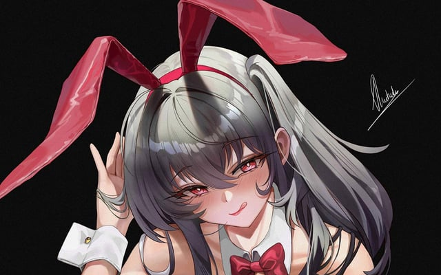

夜の始まりさ
bunny girl 誘惑される鼓動に
弾け飛ぶ葛藤に愛を乾杯 伝えられなくても
恋の始まりさ bunny girl 誰かを穿って
澄んだ君の目を 孕んで
さあ キザなステップを刻んで
仕事帰りの疲れは 私と このグラスに
さあ 自分好みに縋って
世間に対する気持ち 私に注いでみない?
ありがちなラブソングでも 愛が込められてるの
- それでも汚れるのね 君を見れば分かるの
- 下を向く君の目を 無理矢理剥ごうとはしない
- だからそんな顔せず手を差し伸べて
- ほら
夜の始まりさ bunny girl 誘惑される鼓動に
- 弾け飛ぶ葛藤に愛を乾杯 伝えられなくても
- 恋の始まりさ bunny girl 誰かを穿って
- 澄んだ君の目を 孕んで
君の愛を知った気で ハイになっていて
- 感度去っていて 毎度泣いていてさ
- それくらいがいいんでしょ
- さあ キザなステップを刻んで
- 君の顔色今では マシになってきてるから
君に委ねるわ bunny girl
- 私をあげるわ bunny girl 誘惑される鼓動に
- 弾け飛ぶ葛藤に愛を乾杯 伝えられてるはず
- 夜の始まりさ bunny girl 誰かを穿って
- 澄んだ君の目を 孕んで